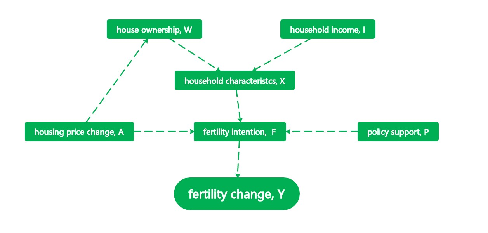

The causal relationship between house price fluctuation and fertility rate change in China
In China, the number of births has dropped in recent years, and it now faces a labor shortage and an aging population. Childbirth is the main way to increase the supply of new labor. After the implementation of the universal two-child policy, the low birth rate is less affected by the policy.
So, what are the actual factors that directly lead to women's lack of reproductive motivation? Over the past two decades, China's housing prices have continued to rise. Both buying and renting houses account for a large proportion of residents' asset input and consumption expenditure. Childbirth is one of the most important family decisions, and the family can not do without the house. What is the role of house price volatility among the many factors affecting fertility? What kind of disturbance does fertility rate have on housing price?
To explore the causal relationship between housing price and fertility rate is helpful to provide the government with scientific theoretical basis for population policy and real estate policy decision-making, and promote the harmonious development of society.
We can collect data on the rate of change of average sales price and birth rate for the last 10 years or so.
Definition: fertility change Y, housing price change A, policy support P∈{0,1}, household characteristics X, including housing ownership W∈{0,1}, household income I, fertility intention D∈{0,1}
The average treatment effect is E[Y(a)−Y(a′)] a ∈A
The total average treatment effect is E[Y(a,M(a))−Y(a ′ ,M(a ′ ))],h,h ′∈H， M is the potential mediator.
I describe the relations between variabls by DAG.
